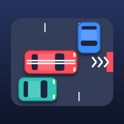

Effective 26 November 2026
Curbslide ("the game") is a single-player puzzle game where you slide cars out of a crowded parking lot. We do not collect any personal information.
If you download the game from Google Play, the App Store or Steam, that store's own privacy policy covers the download and any data the store itself handles.
The game is not directed at children under 13, and we do not knowingly collect personal information from them.
If this policy changes, the new version will appear on this page with a new effective date.
Questions about privacy: meltembkr@gmail.com
Yürürlük: 26 Kasım 2026
Curbslide ("oyun"), kalabalık bir otoparktan arabaları kaydırarak çıkardığınız tek oyunculu bir bulmaca oyunudur. Hiçbir kişisel bilgi toplamıyoruz.
Oyunun kaydettiği tek şey oyun ilerlemeniz (çözülen seviyeler, yıldızlar, ipuçları) ve ayarlarınızdır (dil, müzik, ses). Bu bilgi yalnızca kendi cihazınızda saklanır, bize veya başka birine gönderilmez. Oyunu silmek ya da Ayarlar › İlerlemeyi sıfırla bu bilgiyi siler.
Reklamlar (Android ve iOS). Android ve iOS sürümleri Google AdMob reklamları gösterir: seviyeler arasında ara sıra tam ekran reklam (ilk seviyelerde hiç gösterilmez) ve ek ipucu kazanmak için isteğe bağlı videolar. Google reklam göstermek ve ölçmek için reklam kimliği, IP adresi, buna dayalı yaklaşık konum, cihaz ve uygulama bilgisi ile reklam etkileşimlerini toplayabilir (ayrıntılar). AB, Birleşik Krallık ve İsviçre'de kişiselleştirilmiş reklam için onay istenir; tercihinizi Ayarlar › Reklam gizlilik seçenekleri'nden değiştirebilirsiniz. iOS'ta reklamlar yalnızca izlemeye izin verirseniz kişiselleştirilir. Android'de reklam kimliğinizi sistem ayarlarından sıfırlayabilir veya silebilirsiniz. Steam sürümü reklamsızdır ve veri göndermez.
Oyunda uygulama içi satın alma, hesap, kendi analiz aracımız, sohbet veya sosyal özellik yoktur. Oyun kamera, mikrofon, konum, rehber, fotoğraf veya dosyalarınızı kullanmaz; oyunun kendisi internetsiz çalışır, internet yalnızca reklamlar için kullanılır. Oyunu indirdiğiniz mağazanın (Google Play, App Store, Steam) kendi gizlilik politikası indirme işlemini kapsar.
Oyun 13 yaş altı çocuklara yönelik değildir ve onlardan bilerek kişisel bilgi toplamayız.
Sorularınız için: meltembkr@gmail.com